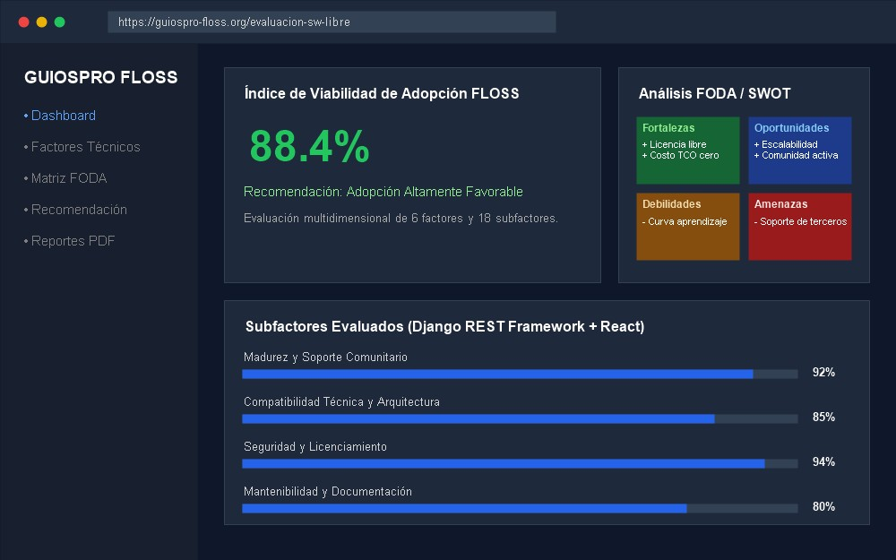
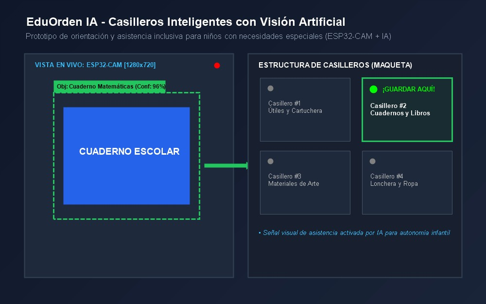
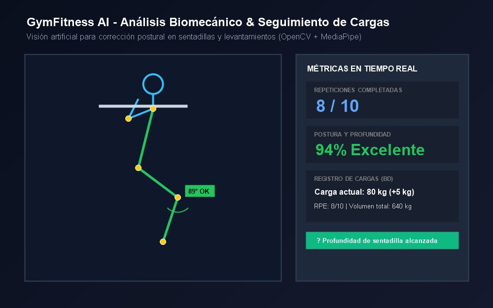

Formación & Autoaprendizaje
Estudio sistemático de estructuras de datos, algoritmos, principios de diseño SOLID y actualización continua en tecnologías emergentes.
Estudiante universitario enfocado en el desarrollo de software full-stack, arquitecturas web escalables y soluciones aplicadas con Inteligencia Artificial y visión computacional.
Soy estudiante universitario de la carrera de Ingeniería de Software, orientado al diseño y construcción de sistemas eficientes, intuitivos y mantenibles. Me motiva comprender en profundidad cómo el software transforma necesidades del mundo real en herramientas digitales de impacto tangible.
Mi formación equilibra el desarrollo frontend moderno y accesible con arquitecturas backend robustas, bases de datos relacionales y la integración de modelos de visión computacional (OpenCV, MediaPipe) y prototipado IoT con microcontroladores ESP32.
Me destaco por mi curiosidad técnica, rigor metodológico, aprendizaje continuo y apego a las buenas prácticas de la ingeniería (Clean Code, control de versiones semántico y diseño centrado en el usuario).
Estudio sistemático de estructuras de datos, algoritmos, principios de diseño SOLID y actualización continua en tecnologías emergentes.
Prioridad en la legibilidad, modularidad, tipado consistente y documentación técnica rigurosa para facilitar el trabajo en equipo.
Enfoque de ingeniería en problemáticas reales: asistencia médica/cognitiva (EduOrden IA), biomecánica (GymFitness) y evaluación de software (GUIOSPRO).
Competencias técnicas y herramientas en las que he transformado el aprendizaje teórico en experiencia práctica y soluciones ejecutables.
OpenCV, MediaPipe, Django, Scripting
DOM API, Vanilla JS, Async, React
Tipado estático, Interfaces, Generics
Semántica, Design Systems, Flex/Grid
PostgreSQL, Consultas complejas, DDL/DML
POO, Algoritmia universitaria, JDBC
ESP32-CAM, Punteros, Arduino
Control de versiones, Branches, Rebase
GitHub Pages, Repositorios, Issues
IDE principal, Debugging, Extensions
Contenedores, Docker Compose
Pruebas de APIs REST, Colecciones
Comandos CLI, Permisos, Shell Scripts
Prototipado UI, Wireframing, Design Tokens
Soluciones completas desarrolladas con rigor técnico, enfoque en el usuario y resolución de problemas prácticos.

Desarrollo Web Full-StackSistema web integral diseñado para evaluar la viabilidad de adopción de tecnologías de código abierto (FLOSS) en organizaciones mediante análisis FODA automatizado y ponderación técnica.

IoT + Visión ArtificialPrototipo físico y digital de casilleros escolares inteligentes para niños con discapacidad cognitiva, integrando una cámara ESP32-CAM y algoritmos de visión por computadora para guiar el orden escolar.

IA · Visión ComputacionalSoftware interactivo para atletas que evalúa la biomecánica corporal durante entrenamientos con sobrecarga, midiendo ángulos anatómicos en tiempo real, contando repeticiones y registrando cargas.
Documentación visual de los tokens, decisiones de diseño y componentes reutilizables que sustentan este portafolio web.
Variables CSS reactivas definidas en :root y adaptadas dinámicamente según el tema seleccionado (Dark / Light).
#2563eb
Azul Eléctrico / Acento principal
#7c3aed
Índigo / Acento secundario
#18181b / #f8fafc
Superficie de tarjetas
#09090b / #ffffff
Fondo general del lienzo
#f4f4f5 / #0f172a
Texto primario de alto contraste
#a1a1aa / #64748b
Texto secundario y descripciones
#27272a / #e2e8f0
Líneas y separadores sutiles
Familias tipográficas: Plus Jakarta Sans para display/títulos, Inter para cuerpo y JetBrains Mono para código.
Texto regular con altura de línea optimizada (line-height: 1.65) para lectura descansada y excelente legibilidad en cualquier pantalla.
const portfolio = new ModernSoftwarePortfolio();
Espaciados matemáticos consistentes aplicados en márgenes, rellenos y separaciones de grid.
4px
8px
16px
32px
48px
Muestra real e interactiva de los componentes utilizados a lo largo del portafolio.
Mantiene bordes sutiles, sombras calibradas, superficie reactiva al modo oscuro y elevación suave al pasar el cursor.
¿Tienes una propuesta académica, proyecto de desarrollo o deseas conectar profesionalmente? Envíame un mensaje directo.
Disponible para prácticas y trabajo remoto o presencial.